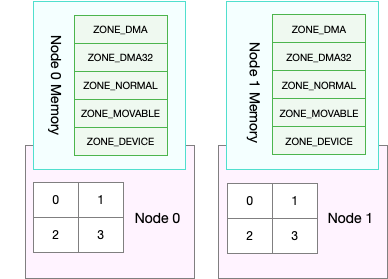

回收场景
- 直接内存回收
- 内核线程回收 kswapd0
三种水位
- 页最小阈值（pages_min）
- 页低阈值（pages_low）
- 页高阈值（pages_high

NUMA和Swap
- NUMA 架构下，多个处理器被划分到不同 Node 上，且每个 Node 都拥有自己的本地内存空间。
- Node 内部的内存空间，实际上又可以进一步分为不同的内存域（Zone），比如直接内存访问区（DMA）、普通内存区（NORMAL）、伪内存区（MOVABLE） 
回收内存模式
- /proc/sys/vm/zone_reclaim_mode
- 0 可以从其他 Node 寻找空闲内存，也可以从本地回收内存
- 1、2、4 都表示只回收本地内存，2 表示可以回写脏数据回收内存，4 表示可以用 Swap 方式回收内存
文件页面和匿名页面
- 对文件页的回收，当然就是直接回收缓存，或者把脏页写回磁盘后再回收。
- 而对匿名页的回收，其实就是通过 Swap 机制，把它们写入磁盘后再释放内存
回收比例
- /proc/sys/vm/swappiness
swap 类型
- swap分区
- swap文件
- kbcommit，表示当前系统负载需要的内存。它实际上是为了保证系统内存不溢出，对需要内存的估计值。%commit，就是这个值相对总内存的百分比。
- kbactive，表示活跃内存，也就是最近使用过的内存，一般不会被系统回收。
- kbinact，表示非活跃内存，也就是不常访问的内存，有可能会被系统回收。
清空buffer和cache
- sync; echo 1 > /proc/sys/vm/drop_caches;
- echo 2 > /proc/sys/vm/drop_caches;
- echo 3 > /proc/sys/vm/drop_caches;
观察系统内存变化
- watch -d grep -A 15 'Normal' /proc/zoneinfo